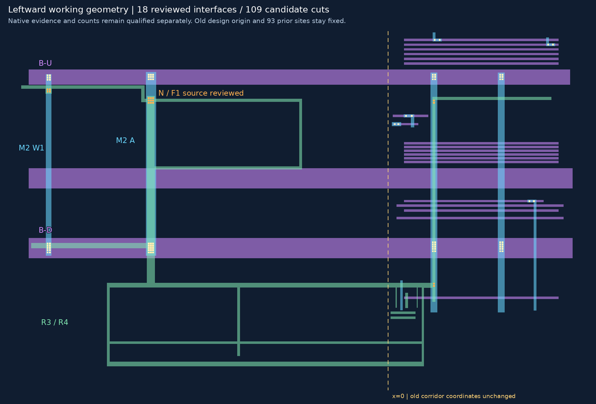
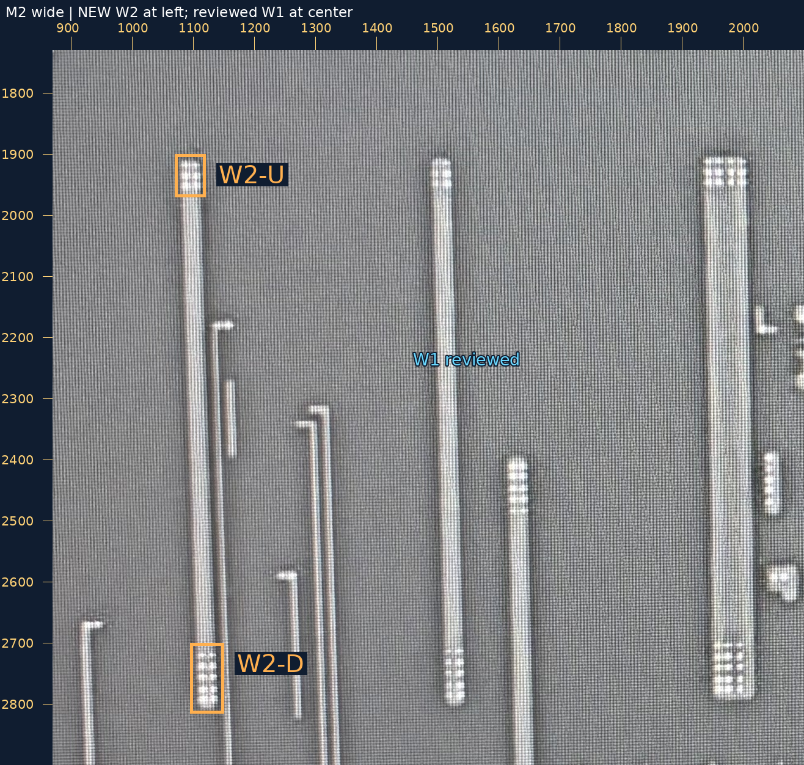
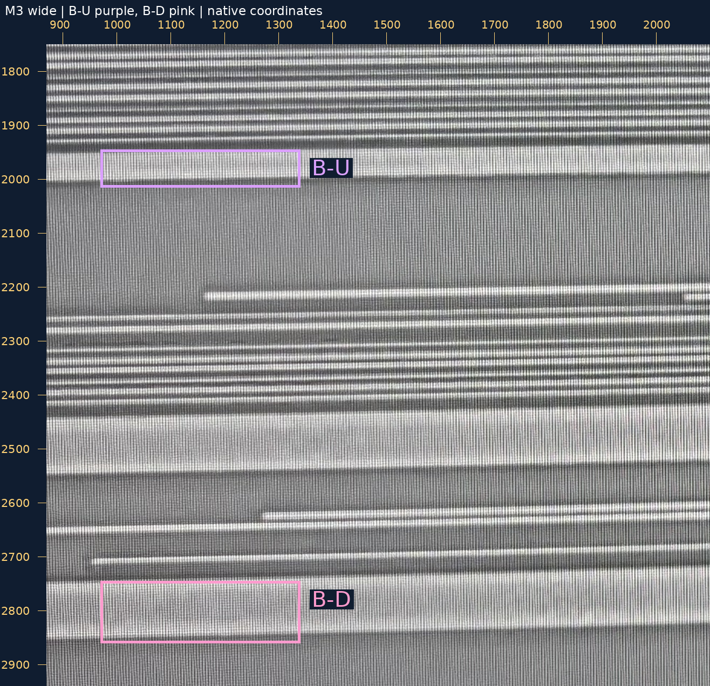
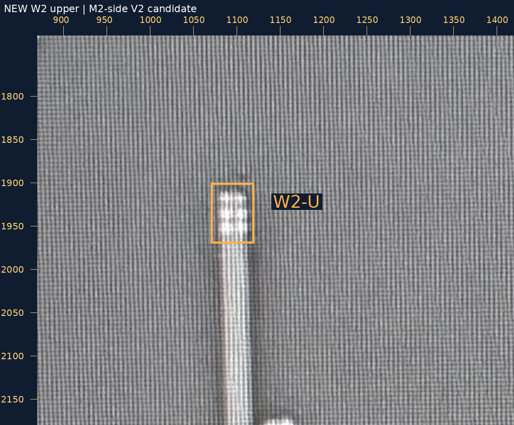
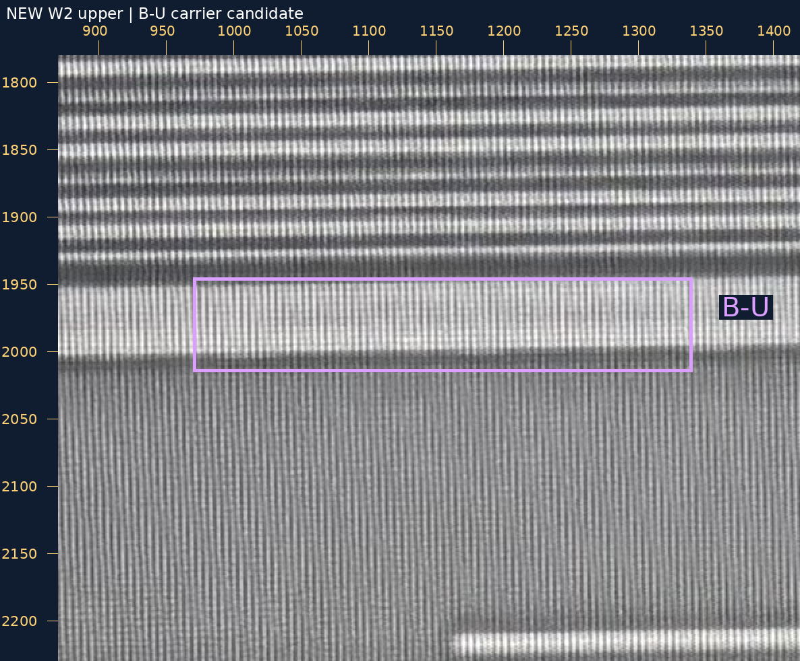
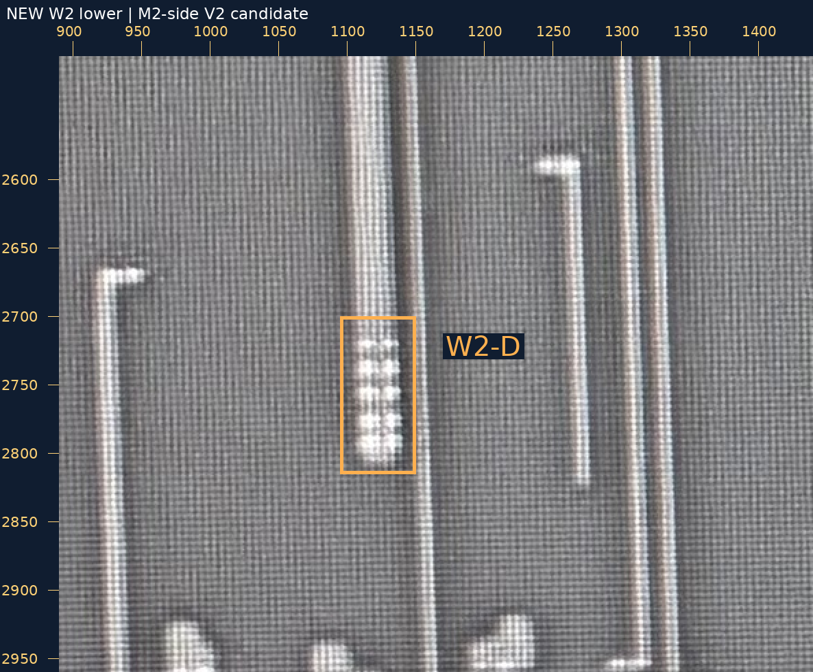
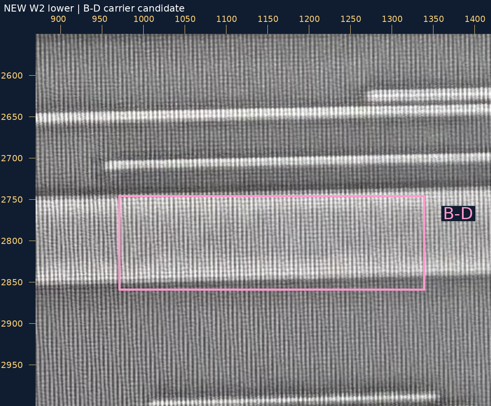

2026-10-30 · 已审事实接续 / 新分支来源裁决
你的原话“W1-U1、W1-D1 均正确”已绑定原送审请求：W1上端V2接B-U，下端V2接B-D。已加入完整规则候选阵列，上端3×2、下端5×2；这两个数量是AI候选，物理孔数、尺寸未获批准。
现在36条金属候选、18条已审局部接口、109个设计候选孔。旧36条金属、16条裁决、93孔及中心完全保持；视口、原点和原生锚点保持。上下金属对整组候选的包围／孔间距均通过，未将软件检查当作真实PDK DRC或精密投影验收。
W1中部普通交叉、右侧中部起始的另一个M2仍不自动接通。沿B-U/B-D向左看见另一条长M2，暂称W2；只在原图做新接口候选，不加入工作几何、不据此扩网。
M1/V1/M2/V2/M3切换 · SVG · PNG大图

这是W1左侧另一条长M2，不是W1，也不是已审A。两层分别显示本层原生坐标，未投影。橙框是孔组搜索范围；M3自身亮点不作为V2来源。
| 位置 | 新候选 | 原图与大邻域 |
|---|---|---|
| W2-U | 是否为V2，并接RT-M3-UP（B-U）？ | M2/M3并排大图 |
| W2-D | 是否为V2，并接RT-M3-DOWN（B-D）？ | M2/M3并排大图 |
可回复“W2-U、W2-D均正确”，或逐项修正。不要求孔数，不重问W1-U1/D1、F1/N/Q1或A的旧U/D。当前不声明W2所有接口或完整网络已核清。
来源m2，原生范围[870, 1730, 2100, 2900]，整数放大1倍。
无标记原图 · 标记大图
来源m3，原生范围[870, 1750, 2100, 2940]，整数放大1倍。
无标记原图 · 标记大图
来源m2，原生范围[870, 1730, 1420, 2180]，整数放大2倍。
无标记原图 · 标记大图
来源m3，原生范围[870, 1780, 1420, 2230]，整数放大2倍。
无标记原图 · 标记大图
来源m2，原生范围[890, 2510, 1440, 2960]，整数放大2倍。
无标记原图 · 标记大图
来源m3，原生范围[870, 2550, 1420, 3000]，整数放大2倍。
无标记原图 · 标记大图
W1人审 · 当前恢复请求 · W2来源观察 · 新送审请求 · 验证
geometry_adopted=false，source_to_design_transform=null，net_edges=[]，complete_network=false。README/site/gh-pages保持。静态资源／脚本和PNG已检查，浏览器交互未实测。